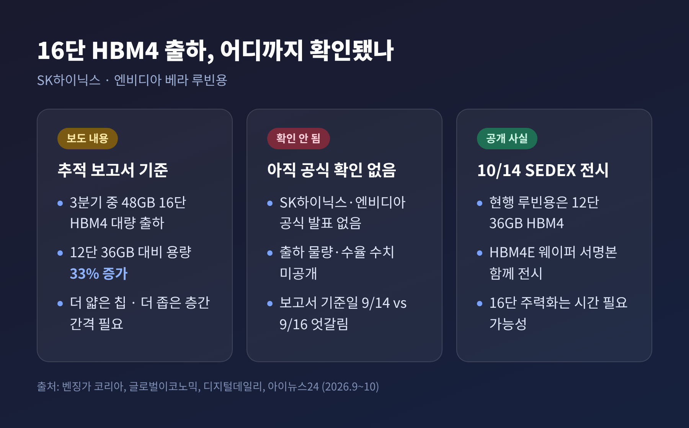
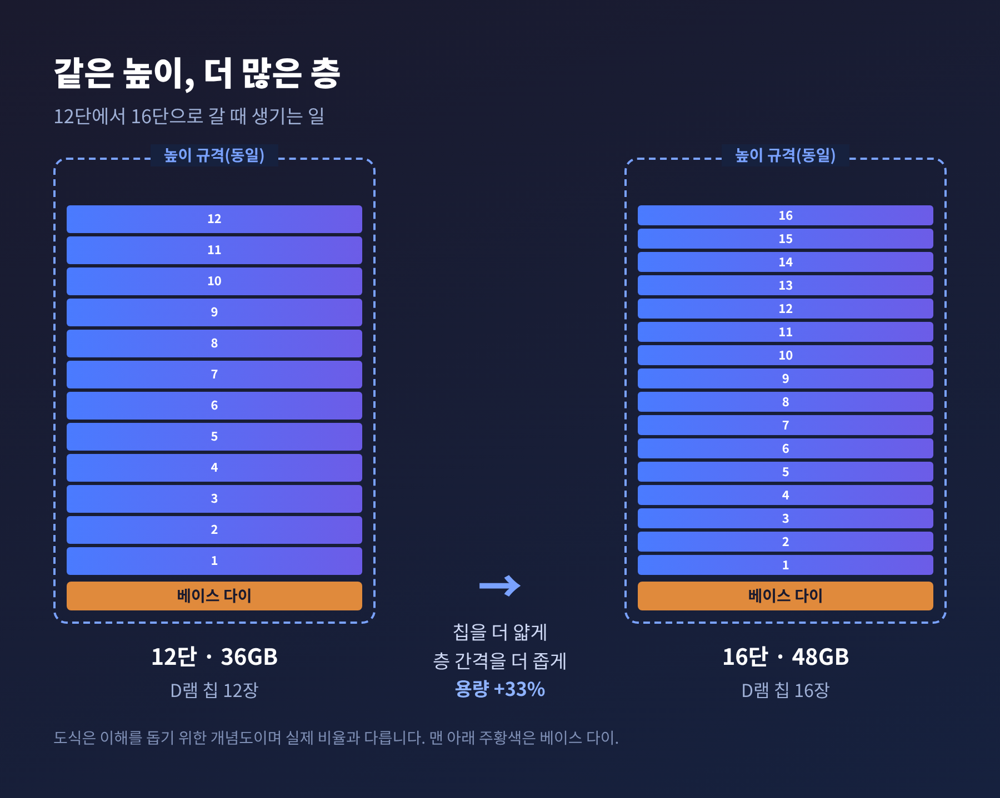
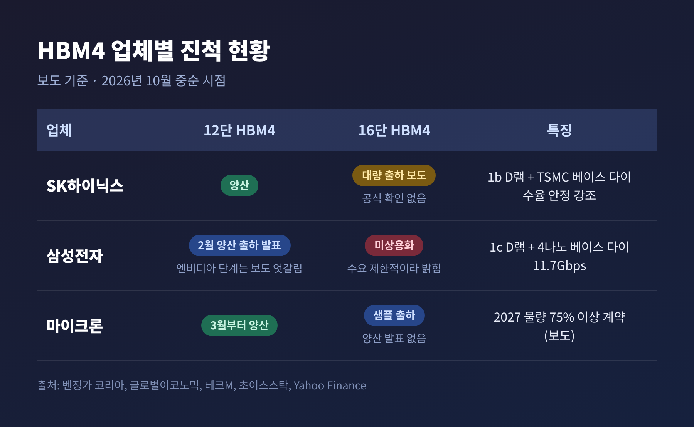
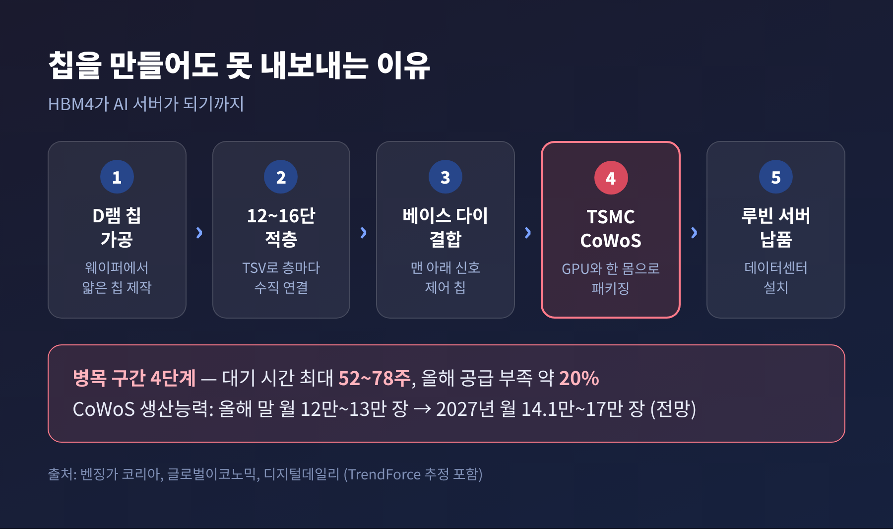
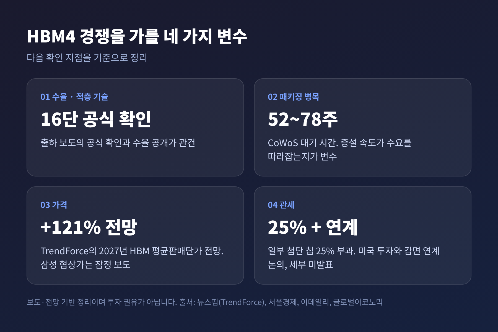

HBM4 16단 출하 보도, 승부는 적층 기술과 패키징 병목에서 갈린다

3줄 요약
- SK하이닉스가 엔비디아 루빈용 16단 HBM4(48GB)를 3분기에 출하하기 시작했다는 보도가 나왔지만, 회사와 엔비디아의 공식 확인은 없습니다.
- 16단은 같은 높이에 칩을 네 층 더 쌓는 일이어서, 가장 어려운 단계로 꼽힙니다.
- 칩을 잘 만들어도 TSMC의 패키징 대기 시간(최대 52~78주)이 막으면 출하가 늦어질 수 있습니다.
이번 글에서는 SK하이닉스의 16단 HBM4 출하 보도가 무엇을 뜻하는지 정리해 보겠습니다. 삼성전자와 마이크론의 진척, 가격과 관세 변수도 함께 짚습니다. 이 글은 사실 전달을 위한 해설이며, 특정 종목의 매수·매도를 권하는 글이 아닙니다.
무슨 일이 있었나: 16단 HBM4 출하 보도
9월 중순, 시장조사 업체 실리콘 애널리스트(Silicon Analyst)의 공급망 추적 보고서가 국내외 매체에 인용되었습니다. 내용은 SK하이닉스가 올해 3분기 중 엔비디아의 차세대 AI 플랫폼 '베라 루빈(Vera Rubin)'용 48GB 16단 HBM4를 대량 출하하기 시작했다는 것입니다. 글로벌이코노믹은 "SK하이닉스도 엔비디아도 공식 발표하지 않았다"고 분명히 적었습니다.
그러니 이 소식은 '확정된 출하'가 아니라 '출하했다는 보도'로 받아들이는 편이 정확합니다. 보고서 기준일도 매체마다 9월 14일과 16일로 엇갈립니다.
HBM(고대역폭 메모리)은 D램 칩을 여러 겹 쌓아 GPU 바로 옆에 붙인 메모리입니다. 데이터가 오가는 통로를 넓혀, AI 연산이 메모리를 기다리며 놀지 않게 해 줍니다. 층과 층은 칩을 수직으로 뚫은 미세한 구리 통로(TSV)로 이어지고, 맨 아래에는 신호를 정리하는 바닥 칩(베이스 다이)이 깔립니다.
12단 36GB에서 16단 48GB로 가면 용량이 33% 늘어납니다. 한 개의 GPU 옆에 더 큰 모델을 올릴 수 있다는 뜻입니다.

한 가지 눈여겨볼 대목이 있습니다. 10월 14일 SEDEX 2026에서 SK하이닉스가 현행 루빈용 제품으로 전시한 것은 12단 36GB HBM4였습니다. 16단 출하 보도와 정면으로 충돌하지는 않습니다. 다만 16단이 시장의 주력 물량이 되기까지는 시간이 더 걸릴 수 있다는 단서로 읽힙니다.
왜 16단이 어려운가: 높이는 그대로, 층만 늘린다
HBM 패키지에는 정해진 총높이 규격이 있습니다. 12단에서 16단으로 가려면 이 높이 안에 D램 네 장을 더 넣어야 합니다. 방법은 하나, 칩을 더 얇게 깎고 층 사이를 더 좁히는 것입니다.
얇은 칩은 휘기 쉽고 깨지기 쉽습니다. 층이 많을수록 열이 빠져나갈 길도 좁아집니다. 디지털데일리에 따르면 SK하이닉스는 초박형 칩 가공과 '어드밴스드 MR-MUF'로 이 난제를 풀었다고 합니다. MR-MUF는 쌓은 칩 사이를 한꺼번에 접합하고 틈을 메우는 공정입니다.
한 층이라도 불량이면 전체 스택을 못 쓰게 되는 구조여서, 단수가 올라갈수록 수율 부담이 커집니다. 그래서 16단 출하는 곧 수율을 입증하는 신호로 해석됩니다. 다만 해당 기사에는 SK하이닉스의 수율 수치나 출하 물량이 나오지 않습니다. 이 부분은 확인되지 않았습니다.

삼성전자와 마이크론은 어디까지 왔나
세 회사의 위치를 보도 기준으로 정리하면 이렇습니다.
SK하이닉스는 12단 양산에 더해 16단 대량 출하를 시작했다고 보도되었습니다. 5세대 10나노급(1b) D램에 TSMC가 만든 베이스 다이를 쓰며, 속도 경쟁보다 수율 안정을 강조해 왔습니다.
삼성전자는 2월 12일 '업계 최초 HBM4 양산 출하'를 발표했습니다. 6세대 10나노급(1c) D램과 자사 4나노 파운드리 공정의 베이스 다이를 조합했고, 속도는 11.7Gbps입니다. 다만 9월 보고서는 12단 HBM4가 엔비디아 최종 인증 단계라고 적었습니다. 반면 6월 5일 젠슨 황 엔비디아 CEO는 서울에서 삼성·SK하이닉스·마이크론 세 회사가 모두 인증을 받고 생산 중이라고 말했습니다. 표현이 엇갈리는 만큼, 엔비디아 탑재 단계를 단정하기는 어렵습니다.
삼성은 16단에 대해 "고객 수요가 제한적이라 아직 상용화할 필요가 없다"고 밝힌 바 있습니다. 필요하면 구현할 기술은 있다는 입장입니다. 한마디로 16단을 서두르지 않는 전략이며, 10월 14일에는 HBM4E 실물 모형을 국내 처음 공개했습니다.
마이크론은 3월부터 12단 HBM4를 양산 중이고, 16단은 샘플을 고객사에 보낸 단계입니다.

시장 점유율 전망도 갈립니다. 증권사 추정치를 종합하면 SK하이닉스가 절반 이상, 삼성전자가 20%대 후반, 마이크론이 10%대 후반에서 20%대 초반입니다. 같은 TrendForce 인용 기사 안에서도 수치가 엇갈릴 만큼 추정의 폭이 넓습니다.
칩보다 무서운 병목: 패키징
이 경쟁에서 가장 현실적인 변수는 칩 바깥에 있습니다. HBM은 TSMC의 CoWoS라는 첨단 패키징 공정으로 GPU와 한 몸처럼 묶여야 비로소 쓸 수 있습니다.
벤징가와 글로벌이코노믹, 디지털데일리가 공통으로 전한 수치는 이렇습니다. CoWoS 대기 시간은 최대 52~78주입니다. 올해 패키징 공급 부족은 약 20%로 추정됩니다. 생산능력은 올해 말 월 12만~13만 장, 2027년 월 14만 1천~17만 장으로 늘어날 전망이지만, 그래도 수요를 다 채우기는 어렵다는 분석입니다.
한 애널리스트는 "결정적 병목은 실리콘이 아니라 패키징"이라고 평했습니다. 예전엔 메모리를 누가 먼저 만드느냐가 승부였습니다. 지금은 만든 메모리를 누가 먼저 GPU에 붙여 내보내느냐까지 봐야 합니다.
SK하이닉스에는 또 하나의 변수가 보도되었습니다. 국내 매체들이 공급망 관계자를 인용해 HBM4 후공정 장비 일부의 도입이 올해 하반기에서 내년으로 밀릴 수 있다고 전했습니다. 트레이딩키는 이를 전하면서도 양산 일정에 실질적 문제가 있다는 증거는 없다고 덧붙였습니다.

가격과 관세, 두 개의 변수
HBM이 귀해지면 값이 오릅니다. TrendForce는 9월 30일 2027년 HBM 평균판매단가가 올해보다 121% 오를 것으로 전망했습니다. 고가인 HBM4의 비중이 커지고, HBM4E가 2027년 하반기부터 본격 공급되기 때문입니다. 메모리와 범용 D램이 같은 첨단 웨이퍼를 나눠 쓰는 터라, 공급 부족은 2027년까지 이어질 것으로 봅니다.
삼성이 엔비디아 등과 협상 중이라는 2027년 HBM4 가격은 GB당 4달러대 중후반이라는 보도가 있습니다. HBM3E 추정치 1.5달러의 약 3배입니다. 다만 이는 미국 매체를 재인용한 잠정치이고, 정확히 따지면 4달러는 2.7배에 가깝습니다. 확정된 가격이 아닙니다.
다른 한편으로 8단 HBM을 택하는 고객도 늘 것이라는 전망이 있습니다. 비싸진 12단 대신 같은 물량으로 더 많은 칩을 내놓으려는 선택입니다. 가격이 오를수록 고객의 절약 유인도 커지는 셈입니다.
관세는 아직 안개 속입니다. 미국은 1월 15일부터 일부 첨단 칩에 25% 관세를 부과했습니다. 엔비디아 H200 같은 제품이 대상이며, 미국 데이터센터용 등은 제외됩니다. 삼성과 SK하이닉스는 HBM을 대만으로 수출하고 완제품 수입은 엔비디아가 맡아, 지금은 직접 납세 주체가 아닙니다. 그러나 9월 2일 러트닉 상무장관은 미국 투자와 관세 감면을 연계하는 방침이 "정확히 맞다"고 답했습니다. 세율과 품목, 시기는 아직 발표되지 않았습니다.
쟁점은 어떤 투자를 인정하느냐입니다. 파운드리나 후공정 투자를 기업 단위로 인정하면 한국 업체에 유리하고, 미국 내 D램 생산량 같은 제품 단위로 따지면 미국에 공장이 있는 마이크론이 유리합니다. SK하이닉스는 인디애나에 약 40억 달러 규모의 HBM 후공정 시설을 짓고 있습니다.

주가가 흔들린 이유와 앞으로의 시선
10월 15일 삼성전자와 SK하이닉스 주가는 하루 만에 크게 내렸습니다. 미국 AI·반도체주 약세와 금리 인상 우려가 겹쳤고, 위의 HBM4 장비 지연 보도와 중국 CXMT의 D램 연구 진전도 거론되었습니다. 이튿날 반등했지만 낙폭을 모두 메우지는 못했습니다. 머니투데이에 따르면 삼성전자는 전날 종가 기준 10.56% 하락했습니다.
증권가 시각은 엇갈립니다. 금리 인상 가능성이 상당 부분 반영되었다는 분석이 있고, 공급 부족과 HBM 가격 상승으로 실적 추정이 오르고 있다는 분석도 있습니다. 10월 28일 FOMC와 삼성전자 월말 실적 발표가 다음 확인 지점으로 거론됩니다. 이 글은 어느 쪽에도 손을 들지 않습니다.
SK하이닉스 안현 R&D 총괄은 10월 14일 AI 인프라 성능이 2030년까지 올해의 약 20배로 커질 수 있다고 내다봤습니다. 낙관적인 전망은 늘 전망일 뿐입니다. 다만 메모리 부족이 최소 1년은 이어진다는 월스트리트저널 보도까지 겹치면, 당분간 병목이 어디서 풀리느냐가 업계의 화두가 될 가능성이 큽니다.
정리하면 이렇습니다. 지켜볼 대목은 세 가지입니다.
첫째, 16단 출하 보도가 공식 확인되는지. 둘째, 삼성전자가 엔비디아 물량을 실제로 얼마나 확보하는지. 셋째, CoWoS 증설이 수요를 따라잡는 속도입니다.
"좋은 메모리를 만드는 일과 제때 내보내는 일은 다른 문제다."
HBM4 경쟁에서 누가 먼저냐는 질문은, 이제 누가 끝까지 안정적으로 납품하느냐는 질문으로 옮겨 가는 중입니다. 그 답은 올해 안에 하나씩 드러날 것입니다.
본 글은 2026년 9~10월 공개 보도를 바탕으로 한 해설이며 투자 권유가 아닙니다. 보도·전망은 사실로 확정된 것이 아닙니다.